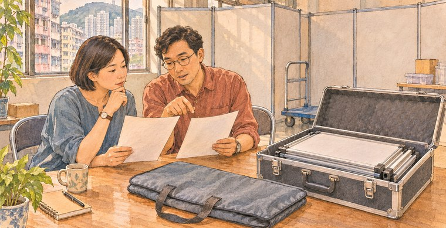

ECO-10 · 香港 · 10–15分钟 · 经济学 · 预防激励 · 风险分配
损坏有人承担，行为还会一样吗？

新闻里
2026年1月15日，香港消费者委员会呼吁共享充电宝租赁服务明确说明租赁收费和押金安排。
该报告并未检验预防激励。下面的非电动展示设备租赁情境是虚构的。
课堂决策
虚构的课堂情境。 香港一家小型活动主办方为期两天的社区展览租用一套便携式展示设备。两份报价的基本租金、设备质量、配送、安装、合格操作和规定的安全搬运要求都相同，所需费用也都已落实。
这里只比较外层运输箱因意外造成外观损坏、需要修复的这一种情形。修复费用恰好为400港元，这种损坏最多发生一次。它不影响设备功能、安全或展览，也不会造成人身伤害或损坏其他财物。正常磨损、原有损坏以及供应商过错造成的损坏，都不向承租方收费。
两种方案的条款都在租用前明确约定，有设备状况记录，也有便于使用的争议处理渠道。不放弃任何法定权利。所有款项都可用可自由支配的资金支付，不影响履行其他义务。
在本课堂模型中，按规定正常搬运时，这种损坏的发生概率为20%。目前还没有找到可选的预防措施。这是虚构的假设，并非租赁中实际观察到的损坏发生率。
| 相同基本租金之外 | A · 供应商承担约定的损坏费用 | B · 承租方承担约定的损坏费用 |
|---|
| 额外收费 | HK$70 | HK$20 |
| 约定的400港元修复费由谁支付？ | 供应商 | 承租方 |
| 针对此项风险的可退押金 | 无 | HK$400 |
| 初始期望额外支出 | HK$70 | 20港元 + 20% × 400港元 = 100港元 |
如果未发生约定范围内的损坏，B的押金会及时全额退还；否则，押金只用于支付有凭据的400港元修复费。交押金不是再收一次费，也不意味着已经发生支出。这里没有融资费用，但押金会占用现金。
起初，只看这一项风险，A的期望支出更低，支出金额也确定。如果后来有可靠且负担得起的预防措施，B可能更有吸引力；不要假定现在已经有这种措施。
你的决策你会暂时选择哪个方案？关于预防措施或你可能承担的损失，什么证据会让你改变选择？
第二轮 · 多了一项资料
作出选择之前，有了一项获准采用的可选措施：给运输箱加装带衬垫的外套，并作额外的搬运安排。费用： 共20港元，包括材料、安装所需时间和两种做法之间所有不同的成本。运输时，防护套套在本来就符合安全要求的箱子外面；这不是改装设备，也不能替代规定的谨慎操作。
在本练习中，这项措施会降低同一项需花400港元修复的损坏事件的发生概率，降幅如下： 从20%降到5%。两种方案都允许采用这项措施，但都不强制。
供应商无法核实整个租期内是否一直采用这项措施。即使购买，两种方案的报价也都不变。模型不考虑未来价格、声誉、因索赔记录而受到的惩罚，也不考虑非金钱收益。实际效果需要证据支持；这些概率仍是虚构的。
你的决策考虑是否购买可选措施后，在A和B中选一个。比较期望支出和仍需自行承担的风险。为什么采取同样的防护措施，在两种方案下对承租方的经济激励可能不同？什么证据会让你改变选择？
把租赁方案和预防措施放在一起比较
选A，不采取可选措施要花70港元，采取则要花90港元。无论采取与否，承租方都不用支付这笔约定的修复费。
选B，不采取措施的期望支出为20港元 + 20% × 400港元 = 100港元；采取措施的期望支出为20港元 + 20港元 + 5% × 400港元 = 60港元。
对只比较自身期望支出的承租方来说，选B并采取预防措施，比选A而不采取措施少花10港元。这只是一个比较基准，不是人人都应该作出的选择。
谁能从预防措施中省钱？
选B时，预防措施使承租方的期望损坏支出从80港元降到20港元：花20港元，预计可少付60港元。与选B但不采取措施相比，期望净节省为40港元。
选A时，承租方能省下的修复费为零。在这个只看金钱支出的比较中，花20港元虽然可以降低模型中的修复风险，却不能给承租方省钱。
这就是所谓的道德风险：损失由谁承担，可能改变人们为预防付费的意愿。这并不能证明受到保障的顾客会粗心、不诚实，或有权不履行应尽的义务。
期望支出60港元，不等于一定支出60港元
选B并采取预防措施后，承租方的实际额外支出有95%的概率是40港元，有5%的概率是440港元。仍有可能要付400港元的修复费。
如果看重支出的确定性，不想让押金占用现金，或认为预防效果的假设不可靠，那么选A、支付70港元仍有道理。案例没有给定风险偏好。在现实中，道德考量、不便、声誉和未来价格也可能促使人们采取预防措施，只是这里没有把这些因素算进去。
用这一机制分析，不另编报价
由供应商出资提供防护套，或在能可靠核实使用情况时给予折扣，都可能使双方的经济激励趋于一致，但这里没有提供这两种做法。不要自行加上一个免费的第三种方案，也不要得出所有损坏费用都应由顾客承担的结论。
规定的安全要求、谨慎操作义务和权利都不变。案例讨论的是责任分配之后的激励，而不是突然发现某项损坏不在保障范围内，也不是核验物品原有的质量。
教师说明
先问同一项400港元的修复费由谁付，再问降低损坏概率能给谁省钱。不要把400港元押金加到修复费上：押金是用来结清那笔费用的，不是另收一笔。
选做：敏感性分析。暂不计风险和现金占用的影响，采取措施后的损坏概率为(70港元 − 20港元 − 20港元) ÷ 400港元 = 7.5%时，选B并采取措施与选A的期望支出相同。低于这个概率，B的期望支出更低，但不一定更受青睐。
选讲：区分实际资源成本。实物修复的期望成本从80港元降到20港元，加上预防成本后一共是40港元。方案收费和可退押金是资金转移，不是额外的实物损失。案例没有给出供应商的成本、利润或市场均衡价格。
第二轮
作出选择之前，有了一项获准采用的可选措施：给运输箱加装带衬垫的外套，并作额外的搬运安排。费用： 共20港元，包括材料、安装所需时间和两种做法之间所有不同的成本。运输时，防护套套在本来就符合安全要求的箱子外面；这不是改装设备，也不能替代规定的谨慎操作。
在本练习中，这项措施会降低同一项需花400港元修复的损坏事件的发生概率，降幅如下： 从20%降到5%。两种方案都允许采用这项措施，但都不强制。
供应商无法核实整个租期内是否一直采用这项措施。即使购买，两种方案的报价也都不变。模型不考虑未来价格、声誉、因索赔记录而受到的惩罚，也不考虑非金钱收益。实际效果需要证据支持；这些概率仍是虚构的。
你的决策考虑是否购买可选措施后，在A和B中选一个。比较期望支出和仍需自行承担的风险。为什么采取同样的防护措施，在两种方案下对承租方的经济激励可能不同？什么证据会让你改变选择？